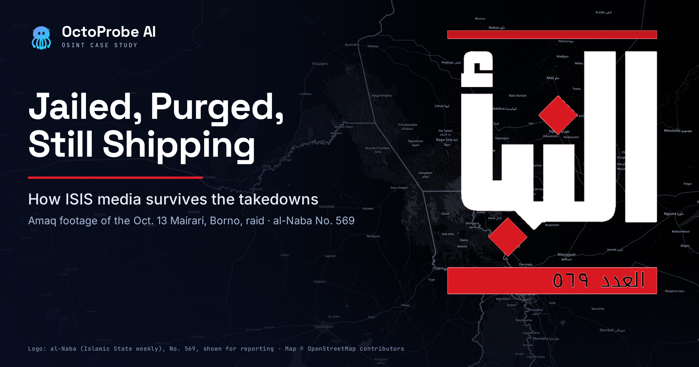
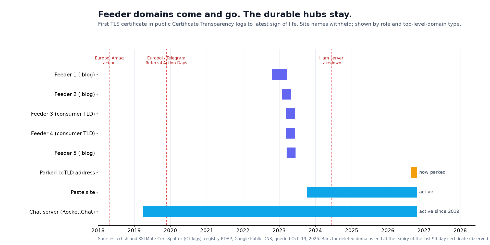
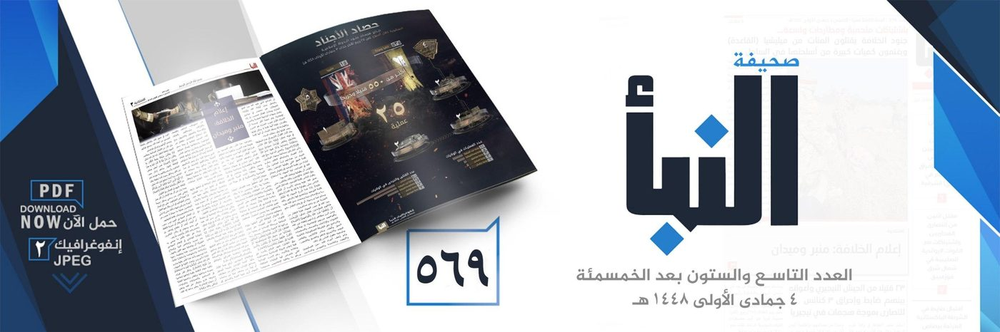
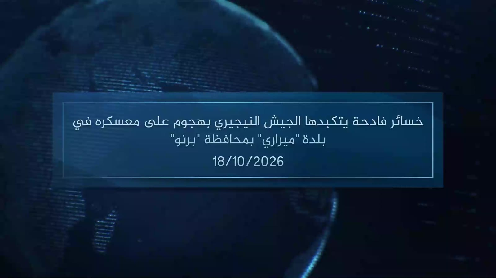
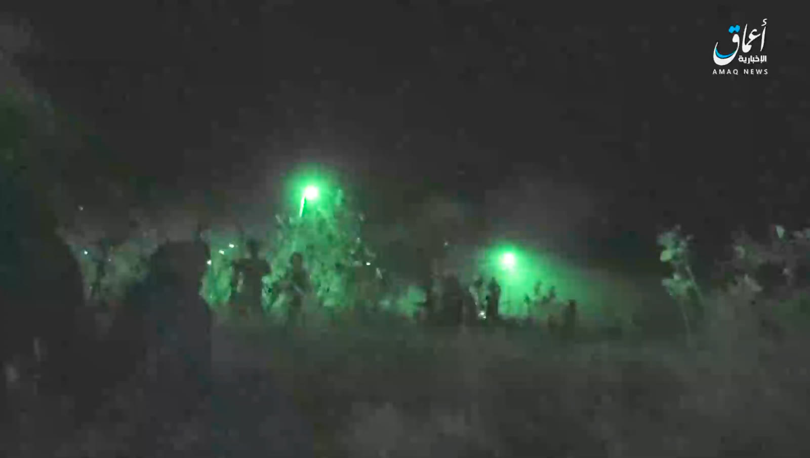
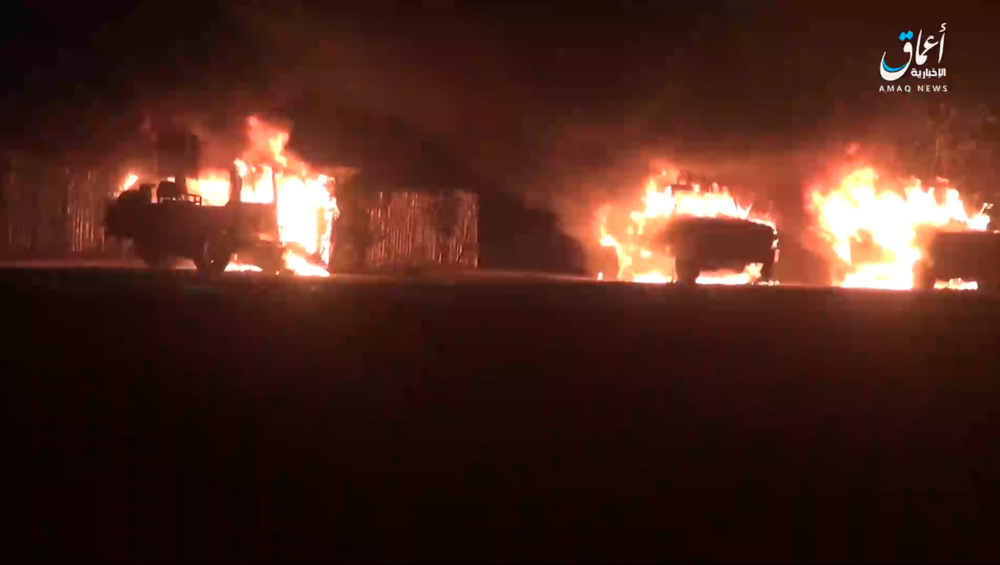
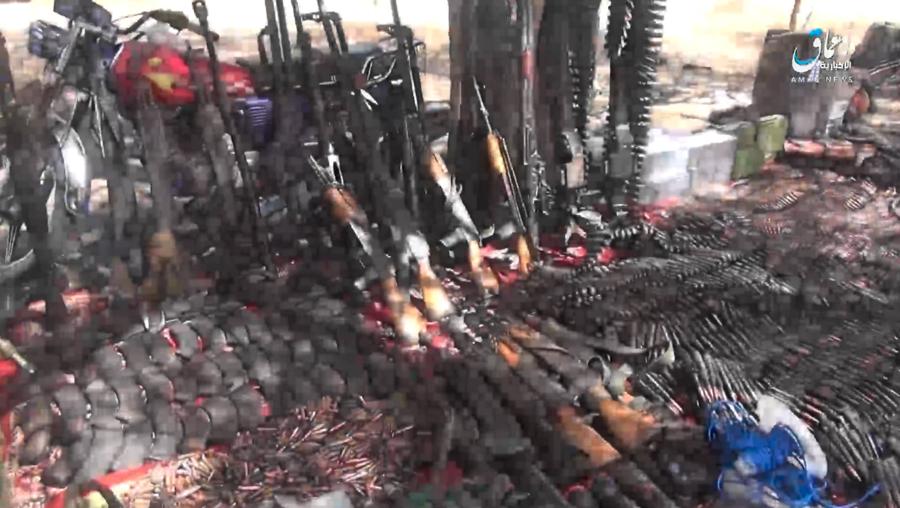
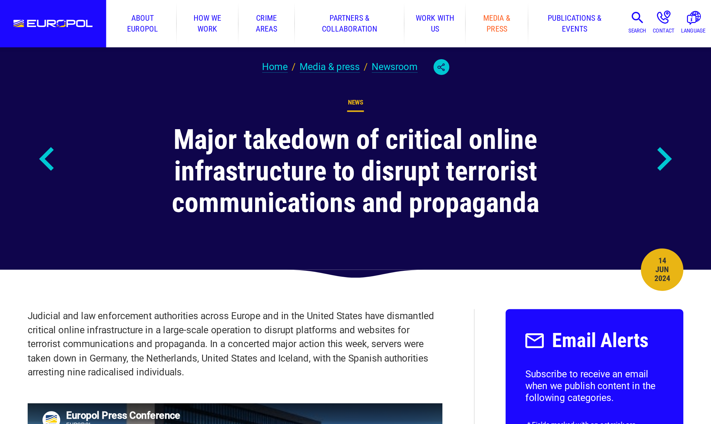

A pro-ISIS chat server has answered at the same web address since March 2019. In that time, Western agencies have purged the movement’s Telegram channels, seized its servers across Europe and North America, and put a central ISIS media figure in a US prison for life. The weekly newspaper still ships every Thursday.
That gap — between the force thrown at ISIS media and its stubborn survival — is the subject of this report. It is not a story about one takedown. It is about how the group’s online techniques changed, step by step, as Western collection and enforcement matured against each previous move. Branded channels on mainstream platforms gave way to disposable domains, self-hosted chat, automated bots, a privacy coin, and an archive built never to forget.
The techniques below are drawn from public records: domain registration data, DNS, Certificate Transparency logs, court filings, government statements, and published research, organized on the OctoProbe platform.
Editor’s note: The Islamic State is a designated Foreign Terrorist Organization. Under OctoProbe’s standards, this report does not name or link any ISIS-run domain, channel, bot, wallet or file; sites are identified by outlet or role only.
The Central Model, and Why It Still Matters
To see what changed, start with what ISIS built at its height. US prosecutors described it in detail in the case of Mohammed Khalifa, a Saudi-born Canadian who was a lead English-language narrator for the group.
According to the criminal complaint filed in the Eastern District of Virginia, ISIS “distributed lengthy leadership statements and other violent propaganda through a central media bureau, or the “Diwan of Central Media,”“ operating “primarily through the al-Furqan Foundation for Media Production“ and the al-Hayat Media Center. Khalifa worked inside that bureau from April 2014.
The complaint also names the model the group fell back on as its ranks thinned. Because of the volume of content and “military strikes that reduced the ranks of ISIS’s Central Media Bureau, ISIS media leaders such as KHALIFA relied heavily on various supporter networks for propaganda production and dissemination.” Those networks were “groups of individuals who provided support to ISIS but were not necessarily geographically located in Syria or Iraq,” and they handled translation into English and other languages. In his statement of facts, Khalifa agreed that from 2016 he “directed various supporter networks that assisted in the translation, production and dissemination of propaganda released under various ISIS media brands.”
Khalifa was charged in 2021 with conspiring to provide material support to ISIS resulting in death. He pleaded guilty to a criminal information and, in July 2022, was sentenced to life in prison (case 1:21-cr-271). The Justice Department said he “served as a lead translator in ISIS’s propaganda production and the English-speaking narrator on multiple violent ISIS videos.”
That is the structure the rest of this story watches erode and adapt: an official central bureau, surrounded by a cloud of dispersed volunteers. Enforcement has steadily removed the easy, branded, mainstream-platform ways those two layers used to connect. The techniques that follow are the workarounds.
The Server That Never Moved
What they did. For years, ISIS distribution ran through mainstream platforms — Twitter, then Telegram above all. What forced the change. When those platforms began removing accounts faster (see the takedown record below), supporters moved part of the operation onto infrastructure they controlled outright.
What they do now. The clearest example is TechHaven, a private chat service running Rocket.Chat, free software that lets anyone host a messenger. Bavaria’s domestic-intelligence agency told Bavarian Radio (BR) the platform is run by people “die ideologisch überwiegend dem Islamischen Staat (IS) zuzuordnen sind“ — people who can be assigned predominantly to the Islamic State ideologically. Researchers Alessandro Bolpagni and Ali Fisher, writing through the Italian institute ITSTIME, concluded that “based on the creation date of the first rooms, TechHaven was established around December 2018,” and by March 30, 2026, it had “561 rooms and 12,349 users.”
Its current domain was registered in March 2019, according to the registry’s public RDAP record, and security certificates for it appear in public logs from that month through this one. BR reported the chat sits behind Cloudflare; Matthias Rosche of Orange Cyberdefense told the broadcaster that “hinter der URL des Chats “TechHaven” liegen zwei IP-Adressen, die beide Teil des Cloudflare-Netzwerkes sind“ — two IP addresses behind the chat’s address, both part of Cloudflare’s network. Public DNS still shows the same arrangement.
The logic is durability. When Europol and Telegram struck in November 2019, BBC Monitoring noted that an administrator of a pro-IS Rocket.Chat service was already warning users away from Telegram. The server, registered eight months earlier, came through untouched.
Our evidence and confidence. An OctoProbe investigation seeded with the chat server’s public links resolved its DNS, certificates, and Cloudflare front, and clustered its associated channels and bot around a single subject. Confidence: high that the server exists, has persisted since 2019, and sits behind Cloudflare (named researchers, plus public DNS, RDAP, and CT logs). Its operators are not identified in any public record.
Throwaway Domains Behind Cloudflare
What they did. ISIS translation and archive hubs once lived at stable addresses. What forced the change. As referral units and monitors learned to flag and report those addresses, long-lived domains became liabilities. What they do now. Operators treat web domains as consumables, cycling through cheap ones on consumer top-level domains and hiding the origin behind a shared content-delivery network.
Tech Against Terrorism, a UN-backed initiative, observed the pattern as early as 2022: a translation site for IS content “has changed domains on at least eight occasions since we began our monitoring of it in late 2021,” and prominent ISIS sites “more frequently migrate to a new URL or top-level domain compared to other types of TOWs“ — terrorist-operated websites. Aaron Zelin of the Washington Institute put the tactic plainly in March 2025 congressional testimony: “To make these websites more difficult to take down, IS jumps domain names, often using different country codes to hide in plain sight.“
The records reviewed for this story show the pattern in miniature. Among the links reviewed, a cluster of five short-name “feeder” domains — three on the .blog extension, the others on other consumer top-level domains — first appeared in public certificate logs between October 24, 2022, and March 17, 2023, three of them within eight days that March. None shows a certificate after mid-2023. Because the automatically renewed certificates these sites use last 90 days, each domain likely went dark within about three months of its last certificate. A sixth address, on a country-code domain, now resolves to a domain-parking company. All of them front through Cloudflare, and all list their registrant as a privacy-proxy service through a US registrar.

No public seizure notice appears on any of the five. A seized domain usually points to a government banner; these simply stopped resolving, which is equally consistent with a host suspension, a lapsed registration, or operators moving on. The records cannot say which.
Our evidence and confidence. Confidence: high on the lifespans, the fronting, and the cadence, all from public CT logs, RDAP, and DNS queried October 19, 2026. Confidence: medium that these specific domains belong to one brand family: they share a name pattern and were co-listed on pro-ISIS index pages, but no public report names these exact hosts. Crucially, the shared use of Cloudflare and of a registrar’s default privacy service proves nothing about who runs them — millions of ordinary sites use the same services. It is a tactic, not a link.
Telegram, Bots, and the Move to SimpleX
What they did. After 2015, Telegram was the backbone of ISIS distribution. What forced the change. A November 2019 Europol-Telegram action (detailed below) and steady pressure since made channels short-lived. What they do now. Supporters automate the churn and are migrating to encrypted alternatives.
Europol said after the 2019 operation that new channels were quickly disabled “despite the use of bots to share join chat links.” That automation has only deepened. The Institute for Strategic Dialogue (ISD) reported in 2026 that official-news channels “are operated by bots and link to a SimpleX channel,” an encrypted messenger that needs no phone number or central directory. ISD added: “Like clockwork, every Thursday, new stand-alone channels are created to distribute the official al-Naba weekly newsletter.“
Our evidence and confidence. An OctoProbe investigation seeded with the chat server’s public links also surfaced live Telegram links — a bot and two channels — clustering around the same subject. Confidence: high on the pattern (automation, disposability, the move toward SimpleX), which is documented by Europol, BBC Monitoring, and ISD.
Per OctoProbe’s standards, no channel or bot identifier is reproduced.
The Money: A Limited Turn to Monero
What they did. Early ISIS crowdfunding leaned on Bitcoin. What forced the change. As blockchain analysis matured, Bitcoin’s public ledger became a liability. What they do now. Some supporter outlets shifted, selectively, to Monero, a cryptocurrency designed to hide senders, receivers, and amounts.
Researcher Animesh Roul wrote for the Global Network on Extremism and Technology (GNET) that one pro-ISIS portal “announced the change in the medium of donations from Bitcoin to Monero exclusively in June 2020.” Spain’s Interior Ministry said the translation network ran fundraising campaigns from its own sites, posting “direcciones de criptomonederos como códigos QR“ — wallet addresses as QR codes.
The adoption is real but limited, and its results are, by design, unknowable. A Monero address cannot be traced the way a Bitcoin address can, so this report makes no claim about how much, if anything, any ISIS-linked wallet received.
Our evidence and confidence. The OctoProbe investigations surfaced Monero wallet strings associated with the link cluster. Confidence: medium. The shift to Monero is well sourced, but on-chain receipts for a privacy coin are not recoverable, and we draw no conclusion from the wallets themselves.
Archive.org, and a Policy That Favors Persistence
What they did. ISIS content was posted to paste sites and social platforms that increasingly deleted it. What forced the change. Faster takedowns meant links rotted. What they do now. Supporters pair their content with copies on the Internet Archive, whose mission is to preserve, not revise, the record.
The behavior was documented years ago. The threat-intelligence firm Flashpoint found in 2018 that Archive.org links were the most common type on two pro-ISIS forums. Analyst Ken Wolf told the BBC that “the use of [the Internet Archive] has allowed the group to achieve persistence whenever content posted to a site such as justpaste.it is removed for violating terms of service,” and that supporters appeared to be “actively archiving pages after creating them.” Later work found the same: ISD’s “Cloud Caliphate” study mapped one of the largest known IS repositories, and a 2023 GNET analysis found “a network of eight mutually interconnected profiles on the Internet Archive“ sharing thousands of productions.
Why does it work? Because archiving sites exist to keep things. Tech Against Terrorism’s content-alert data found archiving services removed only 57 percent of the terrorist material flagged to them — the lowest rate of any platform type it measured — leaving, in that sample, “1687 URLs (out of 3936 URLs) remained online at the time of writing.” Its analysts added that this is “perhaps unsurprising given archiving sites have an important mission statement to archive and therefore preserve online content.”
The Internet Archive’s own policies describe a library that documents the web rather than polices it. Its mission, the organization says, is “to help preserve those artifacts and create an Internet library for researchers, historians, and scholars,” and more broadly “to provide Universal Access to All Knowledge.” It collects “web pages that are publicly available“ and notes that “some sites are excluded by direct site owner request.” Its Terms of Use say that when authors or publishers ask to be left out, “then we may remove that portion of the Collections without notice,” and that the Archive “may, in appropriate circumstances and at its discretion, remove certain content or disable access to content that appears to infringe the copyright or other intellectual property rights of others.” Removal requests, its help center says, “initiate a review by our team,” with “no guarantees beforehand about the outcome of a request.”
The Archive does act against the most violent material when alerted. Its Chris Butler told the BBC that “much of this content is taken down promptly upon our being made aware of it, for example content with executions or personal threats.” The point is not that the Archive endorses this content — it does not — but that a mission to document the internet, combined with reactive, request-based removal, leaves a durable place for backups to sit.
Our evidence and confidence. Confidence: high. Every claim here rests on the Internet Archive’s published policies and on multiple independent sources — Flashpoint via the BBC, ISD, GNET, and Tech Against Terrorism.
This report does not characterize the Internet Archive’s intent beyond what its own policies and the cited sources say, and it does not link to any archived ISIS material.
File Handling: What the Metadata Shows
What they did and what changed. The group’s film-studio era produced heavily post-produced videos. Today’s output is leaner — a weekly text-and-infographic newspaper and short, raw attack clips pushed out within days. One narrow, checkable question is what the files themselves carry.
OctoProbe examined two ISIS media files supplied for this report: a promotional banner for the weekly newspaper al-Naba, and an Amaq News Agency video of an October attack in Nigeria (both discussed below). Both are near-certainly redistributed copies, not originals, so the following describes the copies in hand, not ISIS tradecraft.
The al-Naba banner is a stripped JPEG. It carries a bare JFIF header and nothing else — no EXIF, no camera make or model, no GPS, no editing-software tag, no color profile, no thumbnail. Its compression tables match a standard library’s default quality setting, and its dimensions match the ceiling a major messaging app applies when it recompresses photos. In other words, the absence of metadata here most likely reflects the platform the file passed through, not any deliberate scrubbing — and because the banner is a designed graphic, it never carried camera metadata to begin with.
The attack video is the opposite case: its metadata survived. The MP4 container and both its tracks carry a creation timestamp of 2026-10-18 09:20:34 UTC, and the video and audio handlers are labeled with the name of a MainConcept encoder — the kind bundled into professional editing suites, not the signature a simple phone capture or an FFmpeg pass would leave. That is consistent with an edited Amaq product obtained close to its source rather than scraped off a platform that re-encodes video. The embedded date is a production or export time; it matches the release date printed on the video’s own title card and falls several days after the attack. These values are easily set and cannot establish when, where, or on what device the footage was shot.
Our evidence and confidence. Confidence: high on the technical readings (ffprobe and ExifTool output are preserved in OctoProbe’s case file). The interpretation is stated carefully: a lack of metadata on a redistributed file can reflect the redistribution platform rather than the original author, and we do not infer ISIS operational security from either file.
The Products Today: al-Naba and an Attack Video
The brands that made ISIS famous — the glossy English magazines Dabiq and Rumiyah, the French Dar al-Islam, the al-Bayan radio station — are historical. What persists is cheaper and faster: the weekly Arabic newspaper al-Naba, and short Amaq attack claims recirculated through archive and index sites.

The weekly cadence is now a tactic in itself: ISD describes new al-Naba distribution channels spun up “like clockwork, every Thursday.” Issue 569 is dated 4 Jumada al-Ula 1448 on the Islamic calendar, which converts to Thursday, October 15, 2026 — consistent with that Thursday rhythm.
The attack clips show the central-brand model still operating across ISIS provinces. The video examined for this report is an Amaq News Agency production about an October 2026 assault on a Nigerian army base at Mairari, in Borno State, carried out by the group’s West Africa Province. News agencies reported that suspected Islamic State-aligned fighters overran the base overnight on about October 13-14, looted weapons, and burned it. The video stamps the central Amaq brand onto a provincial operation — the same central-to-local pipeline described in the Khalifa filings — and runs as a raw clip: hard cuts, a persistent Amaq watermark, no narration or anthem, no third-party platform mark.




The clip is dated on its own title card October 18, 2026 — the release date, several days after the raid — a reminder that these products are published on the group’s schedule, not the battlefield’s.
A Decade of Takedowns
Each adaptation above answered a specific blow. The enforcement record runs in parallel.
Police first struck ISIS’s online infrastructure in 2016 and 2017, in operations led by Spain’s Civil Guard. In April 2018, Europol coordinated server seizures in the Netherlands, the United States, and Canada; Britain’s counterterrorism referral unit “identified top-level domain registrars abused by Isis,” the Guardian reported.
The heaviest blow to Telegram distribution came in November 2019, when Europol’s referral unit and Telegram targeted the Amaq, al-Bayan, and Nashir brands. Telegram removed thousands of accounts and bots over two days, and Europol said the action “forced the IS network to partially renounce the terrorist organisation’s established branding, at least on Telegram.”
In June 2024, the FBI’s Miami field office and Spain’s Civil Guard went after the translation network’s servers directly. Machines came down in Germany, the Netherlands, the United States, and Iceland, and Spain arrested nine people. The FBI said the action “resulted in the dismantlement of the largest ISIS online propaganda network and infrastructure globally.” Europol said the operators “operated new and sophisticated technological infrastructures.”

The sites wobbled but did not vanish. BBC Monitoring reported that the translation and archive sites went offline for months, then that new archive and “dark web” sites were promoted in their place. By October 2025, MEMRI said users of a pro-ISIS server were discussing two ISIS-linked sites coming back and “noted that the versions using anonymizer TOR are down, meanwhile others using open-source browsers are up and running.”
Individuals have paid a price even as the infrastructure regenerates. Beyond Khalifa, US prosecutors have reached supporter-network operators: Jonathan Guerra Blanco, who the Eleventh Circuit said “ran two unofficial ISIS media networks primarily directed at Spanish speakers,” was sentenced to 16 years in the Southern District of Florida; and Abdulrahman Alqaysi, who the Justice Department said “provided his computer expertise to develop and post logos for a media arm of the ISIS group known as the Kalachnikov team,” was sentenced in Texas in 2025.
What the Records Show, and Don’t
The public records tie these sites together loosely, and honestly. Five feeder domains share a naming pattern and went live one after another over five months, three of them in eight days. That timing is a real signal.
The infrastructure adds little. The domains share no registrant visible in public records, no private mail server, and no certificate issued at the same moment. Their common use of Cloudflare and of a registrar’s default privacy service is shared with millions of unrelated sites, so it proves nothing about who runs them. One OctoProbe investigation pulled a cluster of personal-looking registration details into view; because that data is the kind of noise that privacy proxies and recycled records routinely produce, this report draws no conclusion from it and names no one.
Who operates TechHaven, the feeder domains, or the archive sites remains the open question. The registrations for the deleted domains are gone, and no public court filing names those operators.
What the record does support is the shape of the adaptation: branded, centralized, mainstream-platform distribution has given way to disposable domains, self-hosted chat, automated and encrypted messaging, a privacy coin, and archival redundancy — each a response to a specific enforcement success. The takedowns work; they just do not end the problem. As ISD put it in 2026, ISIS supporters “continue to not only bounce back from mass takedowns, but in some cases outpace mitigation efforts.”
How This Story Was Reported
Reporters compiled the indicators from links shared in pro-ISIS channels and on a chat server’s public front page, then checked them only through public records: DNS, registry RDAP, certificate logs, court filings, and published research. The indicators were organized in an identifier graph on the OctoProbe platform. Raw metadata, DNS, and certificate pulls are retained in the case file and were not published.
Domains, onion addresses, bot handles, and wallets are withheld because ISIS is a designated Foreign Terrorist Organization; sites are identified by outlet or role only.
Disclaimer
This report relies on public records, court filings, government statements, and published research.